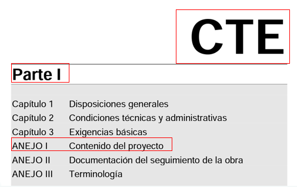
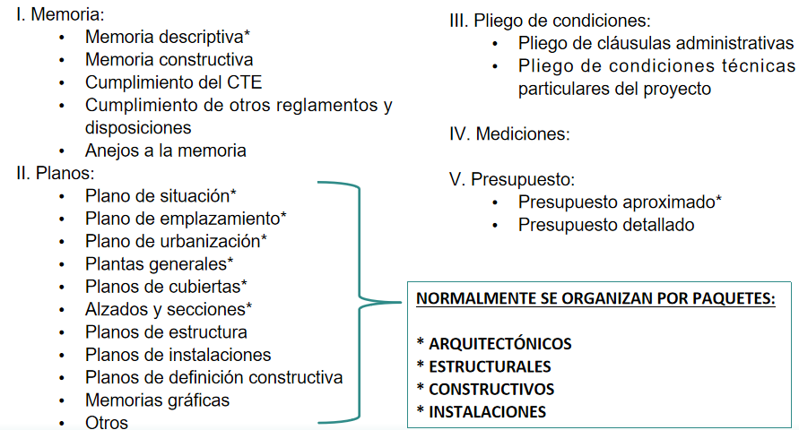

FASES DE UN PROYECTO DE EDIFICACIÓN:
Las fases o entregables de un proyecto de edificación son las siguientes:
0. Estudios previos:
Es la fase preliminar del proyecto, en la que se expresan y se analizan las ideas básicas del encargo, incluyendo bocetos, croquis y representaciones (a escalas o sin ella), programa de necesidades y estimación económica inicial.
1. Anteproyecto:
Es la fase en la que se estudian y presentan las posibles soluciones, con diseños aproximados e intentando aproximarse un poco más con la estimación económica.
3. Proyecto Básico (PB):
En esta fase se concretan las soluciones describiendo espacios, volúmenes e instalaciones de forma general, y analizando y justificando el cumplimiento de la normativa aplicable, y analizando los costes de forma un poco más afinada, como mínimo por capítulos.
**Con este proyecto se podrá solicitar licencia municipal, pero no ejecutarse, para lo cual será necesario un proyecto de ejecución.
4. Proyecto de Ejecución (PE):
Es la fase del proyecto en la que se define con precisión y rigor la ejecución de la obra proyectada, incluyendo detalles constructivos y justificación de cálculos.
**Con este se podrá solicitar la correspondiente licencia de ejecución de obra y se podrá llevar a cabo la misma.
*5. Proyecto de Actividad:
Para usos distintos al residencial, justificando normativa concreta del uso o actividad en cuestión. Puede ser un proyecto independiente o como parte del PE.
CONTENIDOS DE UN PROYECTO DE EDIFICACIÓN:
Los contenidos de un proyecto vienen definidos en el Anejo I del Código Técnico de la Edificación (CTE), que se encuentra ubicado en la Parte I del CTE:

Y dicho contenido, establecido en el anejo mencionado, puede resumirse de la siguiente forma:

Dicho anejo desarrolla el contenido de un proyecto en su fase final (Proyecto de Ejecución), pero el contenido en cada una de las demás fases será el siguiente:
ESTUDIOS PREVIOS: Bocetos, croquis y representaciones de ideas iniciales (a escalas o sin ella), programa de necesidades y estimación económica inicial.
ANTEPROYECTO: - Memoria descriptiva o expositiva, Planos a escala: Situación, emplazamiento, plantas de distribución, alzados y secciones, y Estimación económica.
PROYECTO BÁSICO (PB): Marcados con * en Anejo I del CTE.
PROYECTO DE EJECUCIÓN (PE): Todos los indicados en Anejo I del CTE.